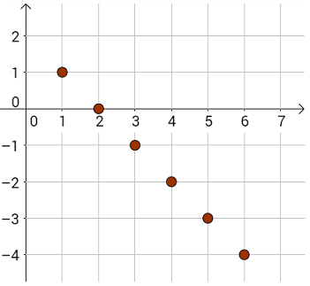
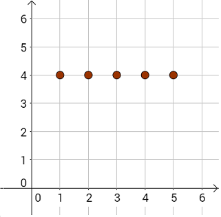
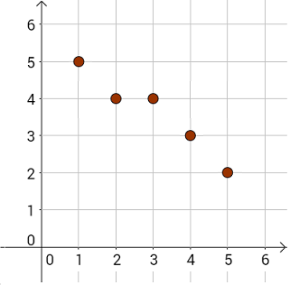

Monotoniczność ciągu
Ciąg liczbowy nazywamy monotonicznym jeżeli jest rosnący, albo
malejący, albo stały.
Definicja
Ciąg \((a_n)\) nazywamy ciągiem rosnącym wtedy, gdy dla każdej liczby naturalnej dodatniej \(n\) prawdziwa jest nierówność \(a_{n+1} \gt a_n\). Ciąg liczbowy rosnący, to taki w którym kolejne liczby są coraz większe,
np.: \[-2,0,3,7,8,9,...\] Oto wykres tego fragmentu ciągu: 
Definicja
Ciąg \((a_n)\) nazywamy ciągiem malejącym wtedy, gdy dla każdej liczby naturalnej dodatniej \(n\) prawdziwa jest nierówność \(a_{n+1} \lt a_n\). Ciąg liczbowy malejący, to taki w którym kolejne liczby są coraz mniejsze,
np.: \[1,0,-1,-2,-3,-4,...\] Oto wykres tego fragmentu ciągu: 
Ciąg liczbowy stały, to taki w którym wszystkie liczby są równe, np.:
\[4,4,4,4,4,...\] Oto interpretacja graficzna tego ciągu: 
Przykład ciągu który nie jest monotoniczny: \[1, -2,3-4,5,...\]
Do ciągów monotonicznych często zalicza się również ciągi nierosnące oraz
ciągi niemalejące.
Ciąg liczbowy nierosnący, to taki ciąg w którym kolejne liczby są coraz
mniejsze lub takie same, np.: \[5,4,4,3,2,...\] Oto interpretacja graficzna tego ciągu: 
Ciąg liczbowy niemalejący, to taki ciąg w którym kolejne liczby są coraz
większe lub takie same, np.: \[2,3,3,4,5,...\] Oto interpretacja graficzna tego ciągu: 
Jak badać monotoniczność ciągu?
Jeżeli chcemy udowodnić, że ciąg \((a_n)\) jest rosnący, to musimy pokazać, że dla każdego \(n\) zachodzi: \[a_{n+1} \gt a_n\] Czyli musimy pokazać, że zachodzi: \[a_{n+1} - a_n \gt 0\] Na przykładzie poniższych zadań zobaczymy jak to robić w praktyce.Zbadaj czy nieskończony ciąg \((a_n)\) o wzorze ogólnym \(a_n=\frac{n}{3n+1}\) jest
monotoniczny.
Zbadaj czy nieskończony ciąg \((a_n)\) o wzorze ogólnym \(a_n=n^2-8n\) jest
rosnący, czy malejący.